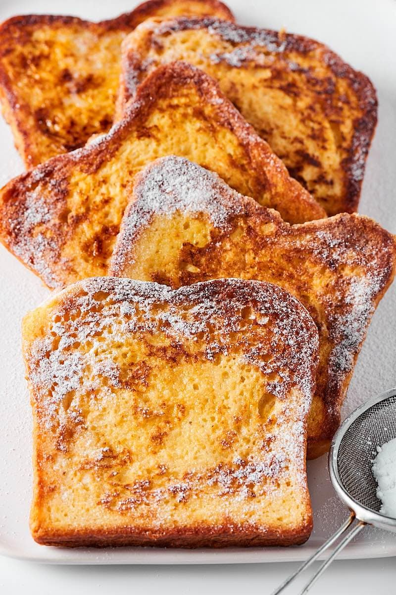

Protein French Toast!

Description
This recipe is all about making a healthy meal taste good.
With this recipe you will never go back to pancakes again.
And you will make gains at the same time.
Serving size is 4 pieces of french toast.
Ingredients
- Bread of your choice
- Syrup
- Fruit of your choice
- Protein Powder(Blueberry is the best)
- Vanilla Extract
- Eggs
- Cinnamon
- Milk
- Get all the ingredients above and have them ready to be used
- Crack 2 eggs into a bowl(A tupperware container that fits the bread is ideal here)
- Add a teaspoon of vanilla to the bowl
- Add a heap of cinnamon(Personal preference here)
- Add 1 and a half scoops of protein powder
- Stir the bowl until everything is mixed in(Add milk or water if solution is too thick)
- Start stove and get pan nice and hot(Medium temperature)
- Dip bread in the bowl and place on the stove. Let cook for 2 minutes before flipping and then antoher 2 minutes.
- Add Fruit and Syrup to the top if you would like
- Enjoy!!